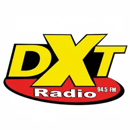
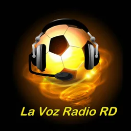
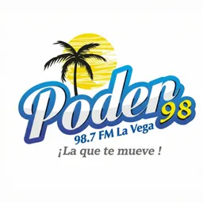
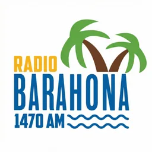
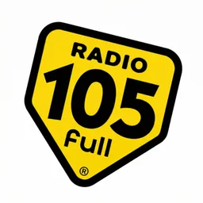

Hub · Género
Radios de deportes
36 emisoras en vivo en VivoRD
El deporte en radio dominicana — especialmente béisbol invernal, pelota MLB y fútbol — tiene emisoras y franjas dedicadas. Este hub reúne señales que mencionan deportes, béisbol, NBA, MLB u otros términos deportivos en nombre o descripción del catálogo VivoRD.
Durante temporada invernal, muchas emisoras amplían cobertura aunque su formato principal sea otro; solo aparecen aquí si esa orientación deportiva está documentada en texto. Preferimos precisión sobre completitud inflada.
Abre cada ficha para escuchar narraciones, mesas de opinión y bloques en vivo cuando el stream responde. Excluimos URLs caídas de forma persistente.
La guía de deportes en TV y radio enlazada complementa este listado con contexto sobre canales y emisoras clave. Combina con hubs de ciudad si sigues un equipo regional.
Durante series y finales, conviene abrir varias fichas en pestañas separadas: VivoRD no mezcla señales, pero facilita saltar entre narradores cuando el titular mantiene activo cada stream.
Liga invernal, Grandes Ligas y fútbol europeo compiten por atención en estas emisoras; el listado refleja solo quienes declaran ese enfoque en los textos que tenemos registrados.
Antes de un partido clave, conviene abrir la ficha unos minutos antes por posibles retrasos en el arranque del stream del titular.
Emisoras












